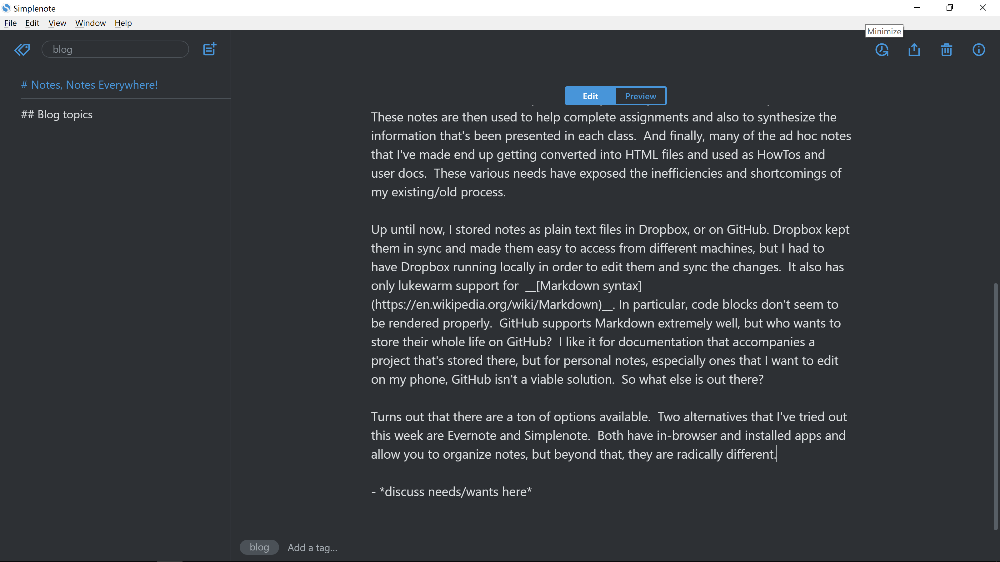

TL; DR - I tried Simplenote and I really like it. Depending on what you want to do, Evernote might have features that you'll like.
I'm a note-taker, can't help myself, if I'm honest about it. I have paper notebooks all over the place with various thoughts, reminders, ToDo lists etc. I've extended this habit digitally as well and keep a "Work Log" in which I record the things I've done during the day. This is especially useful to record any tech snippets that I discovered while doing something new. This has been a lifesaver when I've had to redo something esoteric and which I'd already forgotten. (Which seems to happen more and more these days.) Recently, I've been taking classes, both Online and in person at UW, and have wanted to keep track of topics unique to each class in separate notes. These notes are then used to help complete assignments and also to synthesize the information that's been presented in each class. And finally, many of the ad hoc notes that I've made end up getting converted into HTML files and used as HowTos and user docs. These various needs have exposed the inefficiencies and shortcomings of my existing/old process.
Up until now, I stored notes as plain text files in Dropbox, or on GitHub. Dropbox kept them in sync and made them easy to access from different machines, but I had to have Dropbox running locally in order to edit them and sync the changes. It also has only lukewarm support for Markdown syntax. In particular, code blocks don't seem to be rendered properly. GitHub supports Markdown extremely well, but who wants to store their whole life on GitHub? I like it for documentation that accompanies a project that's stored there, but for personal notes, especially ones that I want to edit on my phone, GitHub isn't a viable solution. So what else is out there?
Turns out that there are a ton of options available. Two alternatives that I've tried out this week are Evernote and Simplenote. Both have in-browser and installed apps and allow you to organize notes, but beyond that, they are radically different.
Evernote tries hard to be an all-in-one document editor. It has options to control font style and size, whether text is centered, left or right-justified etc. You can export to PDF, embed web pages or images in the doc - heck you can even embed an audio recording. Here's an example of an Evernote page saved as a Web page. An additional feature it has (which Simplenote lacks) is the option to create notebooks to organize notes. For me, it borders one being more than I need and it suffers from 2 deal-breakers.
- It doesn't support Markdown, eschewing it instead for built-in formatting controls like you'd see in Word.
- It only supports 2 devices before you have to pay for it.
I can live with the pay wall concept - heck I even support it for something that I like and use, but the lack of Markdown is a problem for me.
Simplenote is far less flashy than it's counterpart. It pretty much gives you what it implies - a simple interface for making text-based notes and storing them. But where it really shines in comparison to Evernote is in it's built-in Markdown support. Here is a note written up in Markdown and then published from Simplenote to the web. It lacks the Notebook feature Evernote has, but by using tags, you can easily accomplish the same thing. I've tried the Web, Android and Windows apps and they all seem to work really well. An added bonus that I've captured in the screenshot above is the "Dark" mode setting which mimics the black background found in most of today's code editors.

SimpleNote screenshot
So for now, I'm sticking with Simplenote.